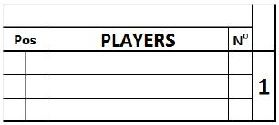

Lineup (batting order)

Write in the top box that spans from Pos to N o , the name of the team, whose players are listed below.
| Pos. |
Defensive position of players, indicated by numbers 1 to9. The designated hitter is identified with DH. A pinchhitter is indicated with PH. A pinch runner is indicatedwith PR. Always use the left square for the position.Only in case aplayer enters a game as PH or PR and gets a fieldingposition afterwards, write the fielding position in theright square. |
| PLAYERS |
Surname, in block capital letters, and first name, in smallletters. When there is an official roster available, use thenames from the roster. The first line is for the startingplayer and the next two are for substitutes. When morethan three lines are necessary for any given position inthe lineup, the lines after position nine shall be used. Inthis case the batting order number must be indicatedalongside the additional names. |
| N° |
Players ’ uniform numbers . |
The printed numbers correspond to the batting order lineup . When a team uses a designated hitter, he is listed in the lineup. As the DH bats forthe pitcher, the name of the pitcher shall be written in the proper rows below the lineup.